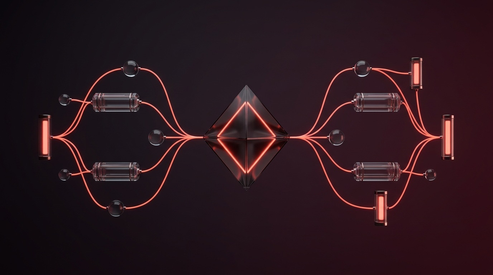

Design reliable, production-grade AI automations on a visual node canvas—combining deterministic pre-LLM routers, stateful Postgres & Data Store memory, MCP tool bridges, Slack/email approval pauses, and runaway spend circuit breakers.

Many beginners wire a webhook straight into a large language model and ask one giant prompt to parse inputs, call APIs, handle edge cases, and format replies. In production, that pattern is slow, costly, and fragile. Reliable visual automation treats AI as a bounded specialist inside deterministic rails—letting free rule nodes do 80% of the sorting before an agent ever wakes up.
Whether you build inside self-hosted n8n or cloud-managed Make, every resilient AI workflow follows the same three-stage pattern: deterministic intake cleans and branches payloads at zero token cost; a constrained AI Agent resolves ambiguity using persistent memory and scoped tools; and downstream safety nodes verify human approval before mutating customer records.
$100—handle it in an n8n Switch node or Make Router first. Deterministic filters cost zero tokens and never hallucinate.
Choosing between n8n and Make comes down to two practical realities: how each platform meters complex multi-step loops, and whether your compliance rules demand self-hosted Docker containers on your own infrastructure.
n8n main with Redis, PostgreSQL, and scaled worker containers (note: enterprise SSO/LDAP, Git sync, and multi-env features require n8n Business/Enterprise).Code nodes, local Ollama models, MCP Server Triggers, or strict self-hosted PII pipelines.
2. Pick Make when non-engineers need rapid drag-and-drop scenarios across 3,500+ SaaS apps without managing servers.
3. Pair Both by triggering clean SaaS webhooks in Make and forwarding heavy AI reasoning to an n8n queue endpoint.
| Platform Option | Metering & Scale Model | Agent & Memory Stack | MCP & Code Flexibility | Primary Watchout |
|---|---|---|---|---|
| n8n Self-Hosted Docker + Queue Mode |
Unlimited Executions: Pay only VPS + LLM API costs; scale Redis workers. | AI Agent node + Window Buffer or durable Postgres Chat Memory. | Native MCP Client Tool, MCP Server Trigger & JS/Python Code. | You own TLS proxy, WEBHOOK_URL, backups & N8N_ENCRYPTION_KEY. |
| n8n Cloud Starter / Pro |
Per Execution: 2.5k–10k runs/mo; multi-step loops do not multiply bill. | Managed Postgres, built-in Chat Trigger & workflow sub-node tools. | Full Code nodes, HTTP tools & cloud-hosted MCP endpoints. | Localhost/LAN tools require tunnels; heavy polling eats execution quota. |
| Make.com Core / Pro / Teams |
Per Credit (Step): Every active bundle processed costs credits; 0 for Filters. | Make AI Agents + Scenarios-as-Tools + Data Stores (1 MB/1k credits). | Built-in Make MCP Server toolboxes; custom JS requires add-ons/apps. | Unfiltered Iterators & large reasoning models burn monthly credits fast. |
| Hybrid Stack Make Edge + n8n Core |
Best of Both: Low credit intake in Make; zero step tax inside n8n loops. | Make triggers SaaS OAuth apps; n8n hosts Postgres memory & long waits. | Make calls n8n Webhooks or shares tools via MCP HTTP endpoints. | Requires unified correlation IDs across both execution logs for debugging. |
Split Out loop inside one n8n execution counts as 1 execution (or $0 self-hosted). Save Make credits for lightweight webhook triggers and SaaS OAuth bridges.
A production visual workflow separates fast rule-based routing from slow LLM reasoning, anchors memory and tools underneath the agent node, and pauses high-stakes actions for human sign-off while linking an Error Workflow overhead.
POST /v1/triagesessionId, customer tier & HMAC signature.
maxIterations: 6 • Stream OFFsendAndWait pauses run via resumeUrl until Lead clicks Approve.
sessionId • Window 10$2.14 / $10.00sessionId before entering the graph.
Switch or Make Router (0 credits) to bypass AI for spam and routine lookups.
maxIterations, disables streaming during JSON extraction, and follows strict tool rules.
sendAndWait or email resume URLs without tying up worker RAM.
maxIterations overrun routes straight to an Error Trigger workflow (or Make Retry / Incomplete Executions queue) so zero failed payloads disappear silently.
Inside n8n, the AI Agent node acts as an orchestrator wired downward to modular sub-nodes for its Chat Model, Memory, and Tools. Understanding two crucial design choices—durable Postgres memory and two-step JSON formatting—eliminates 90% of production agent bugs.
sessionId memory layers, and MCP or sub-workflow actions to swappable sub-nodes below.
Window Buffer Memory (Simple Memory) lives inside one worker’s RAM—wiping on restarts and failing across Docker queue workers. Always swap to Postgres Chat Memory (or Supabase) keyed by sessionId in production.
Attaching a Structured Output Parser straight onto an AI Agent with Streaming ON frequently triggers endless retry loops. Disable Streaming on the Model node, or pipe the agent’s plain text into a downstream Basic LLM Chain + parser.
The LLM chooses tools solely from each sub-node’s Description and schema. Write sharp rules like “Lookup shipping status by order_id; never call for billing disputes” and keep maxIterations capped at 6–8.
// n8n Postgres Chat Memory Session Key Expression (set Key Type = "Define below"):
{{ $json.headers['x-session-id'] || $json.body.customer_email + ':' + $json.body.thread_id }}
// n8n AI Agent System Message (paired with downstream Basic LLM Chain for strict JSON):
You are a cautious support triage assistant. Use "lookup_order_sql" for shipment status only.
Never invent tracking numbers or issue refunds above $100. Cap tool lookups to 3 calls max.
Output a concise plain-text decision summary; downstream formatting handles JSON conversion.Code node to strip outer fences before calling JSON.parse().
The Model Context Protocol (MCP) turns visual workflows into a two-way bridge: your n8n agents can call external MCP tools dynamically, and your entire n8n or Make workspace can act as a secure MCP server for Claude Desktop or Cursor.
2.49+) to external Streamable HTTP/SSE MCP servers.maxIterations <= 8 + Postgres Memory,
[4. Scoped Tools / MCP] Read-only SQL + MCP Client allowlist,
[5. Approval & DLQ] Slack sendAndWait + Error Trigger.
| Pipeline Element | What It Controls | What Fails When Skipped |
|---|---|---|
| Trigger & Schema | Verifies webhook signatures, normalizes fields, and assigns a sessionId. |
Spoofed webhook traffic or missing thread IDs break downstream memory. |
| Deterministic Gate | Filters spam, dedupes hashes, and routes simple tasks before AI runs. | Out-of-office auto-replies and duplicates drain monthly token budgets. |
| Bounded Agent | Caps reasoning steps, persists state in Postgres, and isolates JSON formatting. | Infinite tool loops hit maxIterations or lose context on worker restarts. |
| Scoped Tools / MCP | Restricts agent queries to read-only SQL views and allowlisted MCP tools. | Prompt injection can trick over-privileged agents into modifying records. |
| Approval & DLQ | Pauses risky mutations for human clicks and captures crashes for replay. | Unverified refunds ship live or timed-out payloads vanish without alerts. |
# Production n8n Docker Queue Mode (.env + docker-compose.yml excerpt)
# .env: EXECUTIONS_MODE=queue | DB_TYPE=postgresdb | QUEUE_BULL_REDIS_HOST=redis
# N8N_ENCRYPTION_KEY=<32-byte-hex> | WEBHOOK_URL=https://n8n.yourdomain.com/
# EXECUTIONS_DATA_PRUNE=true | EXECUTIONS_DATA_MAX_AGE=168 | EXECUTIONS_DATA_PRUNE_MAX_COUNT=25000
services:
postgres: { image: postgres:16-alpine, volumes: [pg_data:/var/lib/postgresql/data] }
redis: { image: redis:7-alpine, command: redis-server --appendonly yes }
n8n: { image: n8nio/n8n:latest, env_file: .env, ports: ["5678:5678"], depends_on: [postgres, redis] }
n8n-worker: { image: n8nio/n8n:latest, command: worker, env_file: .env, depends_on: [postgres, redis] }
# Scale horizontally: docker compose up -d --scale n8n-worker=3N8N_ENCRYPTION_KEY identical across n8n and all n8n-worker containers. Note that n8n 1.x reaches EOL on Dec 31, 2026 and n8n 3.0–3.3 (Docker-only self-hosting; removes legacy AI Agent v1 modes) ships GA in early Dec 2026—audit Settings → Migration Report on 2.47+ / 2.49 before upgrading.
Make excels at fast visual SaaS orchestration. By placing zero-credit Routers and Filters ahead of LLM modules, isolating arrays with Iterators, and backing agents with ACID-capable Data Stores, you keep scenarios lean and predictable.
Wire on-demand Scenarios (with strict input schemas and Return Output) plus external MCP Server tools directly into Make AI Agents (New) within the same run.
Routers and Filters consume 0 credits—drop invalid rows before an Iterator splits arrays into bundles, then use an Aggregator to recombine results before one single LLM call.
Use Data Stores (1 MB per 1,000 credits; 15 MB max per record) for agent memory, dedupe keys, or mini RAG catalogs. Data Stores carry ACID tags supporting explicit Commit and Rollback handlers.
| Make Module / Directive | Credit Impact | Role in AI Workflows | Key Watchout / Best Practice |
|---|---|---|---|
| Router + Filter | 0 Credits | Splits VIP vs. standard traffic or drops empty payloads pre-LLM. | Always attach a fallback route so unmatched items do not vanish quietly. |
| Iterator + Aggregator | 1 Credit / bundle | Unpacks invoice lines or email attachments for per-item checks. | Aggregate summaries back into one bundle before calling expensive frontier LLMs. |
| Make AI Agent + Return | Token-tiered or BYOK | Reasons across scenario tools, external MCP servers & Data Stores. | Return Output halts its route immediately; keep prompts narrow and bounded. |
| Retry (formerly Break) | Retries failed step | Queues rate-limited 429/503 runs into Incomplete Executions. |
Enable Incomplete Executions in Scenario Settings; space 3 retries by 15 min. |
| Skip / Resume / Rollback | Varies by route | Skip (Ignore) drops bad rows; Resume injects defaults; Rollback reverts DBs. |
Use Rollback on ACID Data Stores when partial writes would corrupt balances. |
// Make Scenario-as-Tool Input Schema & Return Output JSON Contract (for Make AI Agent / MCP):
{
"tool_name": "issue_credit_or_escalate",
"inputs": { "customer_id": "text (required)", "amount_usd": "number (required)", "reason": "text" },
"return_output": { "status": "queued_for_approval", "credit_limit_exceeded": true, "ticket_url": "https://..." }
}Make’s AI Provider bills 1 credit/op plus dynamic token credits (and Maia in-builder replies draw ~140–160 credits after your 70-message trial). On paid plans, use BYOK (OpenAI/Anthropic) so Make charges only base operations.
Use Make’s built-in arrayDiff, arrayIntersect, set, and escapeJSON functions to clean JSON payloads at zero module cost, and test individual modules while disconnected before wiring full scenario routes.
Rollback revert partial edits cleanly.
Production automations pair speed with restraint: routine items take a fast deterministic rail, high-impact writes pause gracefully for human confirmation, and automated circuit breakers stop runaway token loops before a bill spikes.
sendAndWait)Wait node serialize state to PostgreSQL and sleep until someone clicks $execution.resumeUrl.WEBHOOK_URL=https://your-domain.com/ in .env and set Slack App Interactivity Request URL to https://your-domain.com/rest/waiting-webhook/ so buttons do not 404 or loop.execution.id, URL, and payload into Postgres + Slack alerts.maxIterations <= 6 & maxTokens caps, and (3) a daily Redis/Data Store spend counter that trips an instant bypass above threshold.// Deterministic Pre-LLM Code Guard (n8n Code Node): Strip fences, enforce payload cap & check daily budget
const text = ($input.first().json.body?.message || "").slice(0, 4000).trim();
const dailyCalls = Number($getWorkflowStaticData('global').todayCalls || 0);
if (dailyCalls >= 500) return [{ json: { route: "circuit_open", reason: "Daily AI cap reached" } }];
if (/^(unsubscribe|out of office|auto-reply)/i.test(text)) return [{ json: { route: "skip_zero_cost" } }];
return [{ json: { route: "ai_agent", cleanText: text.replace(/\x60{3}[\s\S]*?\x60{3}/g, "[code]") } }];sendAndWait or the Wait node embed WEBHOOK_URL inside $execution.resumeUrl. If you test locally with http://localhost:5678, Slack and email clients cannot reach your callback—point WEBHOOK_URL at a Cloudflare Tunnel or ngrok HTTPS domain before running approval tests.
Use these five battle-tested workflow patterns as starting templates for your team—every recipe pairs deterministic pre-filtering with bounded AI reasoning, persistent state, and clear failure recovery.
| Blueprint & Engine | Node Sequence & Deterministic Gate | Memory, Guardrail & Output |
|---|---|---|
| 1. Support Triage & Refund Guard n8n Queue Mode |
Webhook → Switch (drops spam & FAQ) → AI Agent (Order SQL tool) → If amount > 100 → Slack sendAndWait. |
Postgres Chat Memory by ticket ID; maxIterations: 6; refunds wait for human Slack button click. |
| 2. Invoice PDF OCR & Ledger Sync Make.com |
Watch Email → 0-Credit Filter (PDF only) → Iterator → Data Store dedupe → AI Extract → Ledger Upsert. |
Data Store blocks duplicate invoice IDs; Rollback handler prevents partial accounting rows on error. |
| 3. Internal Ops MCP Bridge n8n MCP Server |
MCP Server Trigger (Bearer Auth) → Switch (tool allowlist) → Read-Only Postgres / Linear sub-workflows. |
Exposes vetted internal lookups straight to Claude Desktop & Cursor without sharing DB credentials. |
| 4. Lead Enrichment & Scoring Make.com BYOK |
Form Webhook → Data Store cache check → Router (skip free email domains) → BYOK Mini LLM → HubSpot. |
Cached domains cost 0 AI tokens; Retry (Break) queues CRM 429 limits into Incomplete Executions. |
| 5. Central DLQ & Spend Watchdog n8n Error Workflow |
Error Trigger → Code (sanitize PII & classify error) → Postgres DLQ insert → Slack #ops-alerts. |
Links across all workflows; catches maxIterations, webhook 404s, and daily spend threshold breaches. |
// Copy-Paste Error Workflow Slack Alert Expression (attach to n8n Error Trigger -> Slack Node):
{
"workflow": "{{ $json.workflow.name }}",
"failed_node": "{{ $json.execution.lastNodeExecuted }}",
"error": "{{ $json.execution.error.message }}",
"execution_url": "{{ $json.execution.url }}",
"action": "Inspect DLQ table row {{ $json.execution.id }} and replay after resolving upstream dependency."
}Automation canvases sit at the crossroads of your inbox, CRM, billing, and production databases. Hardening your credential vault, shrinking tool blast radius, and pruning sensitive execution logs keeps speed from turning into risk.
N8N_ENCRYPTION_KEY with openssl rand -hex 32 and store it in your secrets vault—losing it renders Postgres credentials unreadable.WEBHOOK_URL. Require HMAC or Bearer headers on every Webhook and MCP Server Trigger.DELETE, DROP, or wire-transfer tools to an AI Agent—require a deterministic check plus Slack sendAndWait approval.| Control Domain | n8n Self-Hosted & Cloud | Make.com Managed Platform |
|---|---|---|
| Secret Storage | Encrypted in Postgres via N8N_ENCRYPTION_KEY; separate dev/prod vars. |
Managed Make Connections vault; team RBAC & EU/US data zones. |
| Webhook & MCP Auth | Enforce Header Auth / HMAC validation + IP allowlists at reverse proxy. | Custom Webhook URL secret tokens, IP restrictions & MCP token auth. |
| Blast-Radius Limits | Read-only DB users + isolated task runners + explicit sendAndWait gates. |
Scoped OAuth apps + strict Make AI Agent scenario input schemas. |
| Execution Log Privacy | Disable saving successful payload data on PII flows; set EXECUTIONS_DATA_PRUNE=true. |
Toggle Don’t store data in incomplete/execution logs for regulated runs. |
// Webhook Signature Verification Snippet (n8n Code Node right after Webhook Trigger):
const crypto = require('crypto');
const sig = $input.first().json.headers['x-hub-signature-256'] || '';
const expected = 'sha256=' + crypto.createHmac('sha256', $env.WEBHOOK_SECRET).update($input.first().json.rawBody).digest('hex');
if (!crypto.timingSafeEqual(Buffer.from(sig), Buffer.from(expected))) throw new Error('Unauthorized webhook');
return $input.all();EXECUTIONS_DATA_PRUNE=true with EXECUTIONS_DATA_MAX_AGE=168 (7 days) and turn off Save Execution Progress on stable high-throughput workflows.
You never have to lock every workflow inside one vendor. High-leverage teams pair Make’s instant SaaS connectors at the edge with n8n’s zero-step-tax Queue Mode engine and expose vetted tools over MCP to local coding agents.
Let Make watch customer SaaS inboxes with 0-credit Routers and Data Stores, forwarding only unique, qualified payloads via signed webhooks to n8n.
Redis queues distribute bursts across parallel n8n workers while Postgres Chat Memory keeps multi-turn context consistent across every container.
Expose read-only lookups over MCP Server Triggers to Claude Desktop or Cursor, while routing high-value mutations through Slack sendAndWait approvals.
Every crash lands in an Error Workflow DLQ or Make Incomplete Executions queue with full replay links, while automated 7-day pruning keeps Postgres fast.
Use this diagnostic clinic whenever an n8n agent loops until maxIterations, Slack approval buttons loop or 404, Queue Mode forgets chat history, or Make burns credits—then run the 6-point checklist before enabling any scenario.
| Symptom / Failure Mode | Root Cause | 10-Second Production Fix |
|---|---|---|
1. Agent hits Max iterations (10) reached with JSON parser |
Streaming is ON in the Chat Model node, or Structured Output Parser fights tool-calling turns. | Turn Streaming OFF on the Chat Model node and move the Structured Output Parser to a downstream Basic LLM Chain node. |
2. Invalid JSON in model output syntax crash |
Model emitted markdown triple backticks inside text fields, breaking naive fence splits. | Insert a Code node before parsing to strip outer fences, and instruct raw JSON only inside the System Message. |
| 3. Agent loses memory between messages in Queue Mode | Using in-memory Window Buffer Memory across multiple Redis worker containers. |
Replace with Postgres Chat Memory keyed by a deterministic sessionId expression so every worker shares history. |
4. Slack sendAndWait loops infinitely or throws 404 |
Self-hosted WEBHOOK_URL missing HTTPS domain or Slack Interactivity URL misconfigured. |
Set WEBHOOK_URL=https://your-domain/ in .env and point Slack App Interactivity URL to https://your-domain/rest/waiting-webhook/. |
| 5. Workers fail to decrypt credentials after redeploy | N8N_ENCRYPTION_KEY rotated, omitted from worker .env, or mismatched across replicas. |
Restore the exact original N8N_ENCRYPTION_KEY across main and all n8n-worker containers and restart the Compose stack. |
| 6. Make burns credits fast or stalls mid-Iterator | Unfiltered Iterators feeding individual bundles straight to large built-in AI models. | Place 0-credit Filters before Iterators, aggregate outputs into one bundle pre-LLM, or switch to BYOK mini/nano models. |
| 7. Half-written Data Store or SQL rows after mid-run error | Auto-commit enabled without an explicit transaction rollback route. | Attach Make’s Rollback error handler on ACID Data Stores (or Retry + Incomplete Executions for transient 429 errors). |
Switch / Make Router & cache checks handle trivial or duplicate payloads at 0 LLM cost.maxIterations <= 8, turn Streaming OFF for JSON schemas, and check daily budget counters.N8N_ENCRYPTION_KEY across workers.sendAndWait or email resume buttons against live HTTPS WEBHOOK_URL.Retry on every active flow.EXECUTIONS_DATA_PRUNE=true, verify HMAC/Bearer tokens, and restrict SQL tools to read-only views.